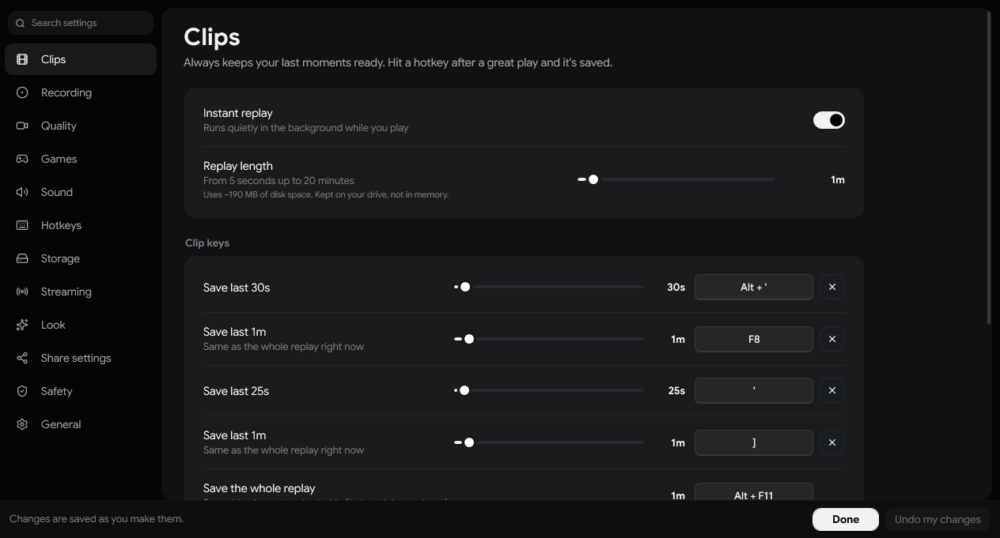

Rimio is a free, lightweight game recorder for Windows. Instant replay, a quick editor, Discord-ready sharing and streaming, built for Valorant and Overwatch and safe with anti-cheat.
Free · No account · No ads · No watermark · Windows 10 and 11, 64-bit

Rimio keeps the last moments of your game ready in the background. Press a key when something happens, and it's saved.
Save the last 15 seconds, a minute or the whole replay with one hotkey, without leaving the game.
Trim on a timeline that shows the sound, jump to moments you marked, and save instantly without re-encoding.
One click makes a copy that fits Discord's 10, 50 or 500 MB limit, a 9:16 cut for TikTok and Shorts, or a full-quality YouTube file, and puts it on your clipboard.
Stream to Twitch, YouTube or your own server, with a layout editor for your webcam, images and text.
Game, friends on Discord and your mic are kept apart, so you can share a clip without your friends' voices or turn your mic down.
Records on your NVIDIA or AMD graphics card, so your frame rate stays where it belongs. Smooth up to high refresh rates.
Every action has a hotkey you can change. Mark a moment mid-round and find it later as a flag on the timeline. Rimio even warns you when another app already uses a key.
Rimio records the way a screen recorder does, through Windows' own capture. It doesn't go anywhere near the game itself, so it stays out of the way of anti-cheats like Vanguard.
Every option says what it does. Here's a look around.
Rimio never touches the game: no injection, no hooks, no reading memory, no drivers and no admin rights. It captures the screen or the game's window through Windows itself, like any screen recorder.
Yes. No account, no ads, no watermark, no subscription, and no telemetry. Your clips stay on your PC.
NVIDIA and AMD cards record on the card itself. Without either, Rimio falls back to the processor.
Recording runs on the graphics card's video encoder, which sits apart from the part that draws your game, so the cost is small.
Yes. Rimio isn't signed with a paid certificate yet, so Windows shows that warning. Choose More info → Run anyway. It installs without admin rights.
Rimio checks for new versions and updates itself from Help → About Rimio. You only need the installer once.
Download Rimio, play as usual, and press a key when it counts.
Download for WindowsVersion 0.8.0 · All releases and notes